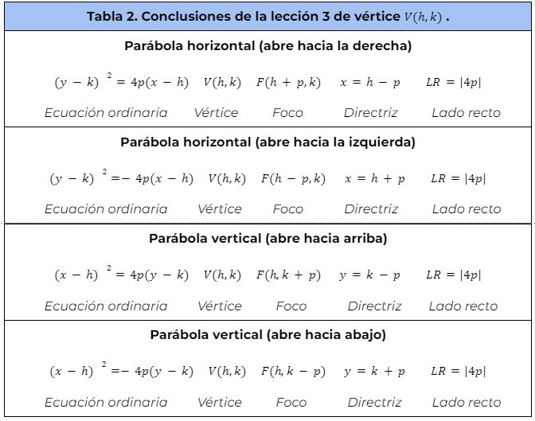
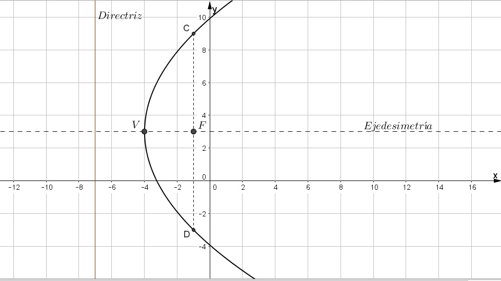
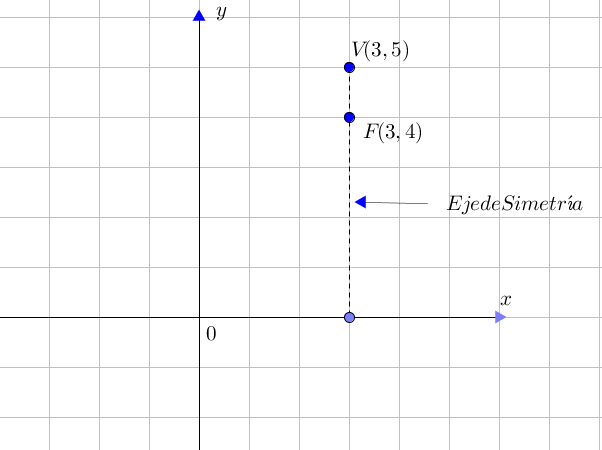

B. Parábola con vértice fuera del origen V (h,k)
Considera la deducción que se hizo en la lección 3 sobre la parábola con vértice fuera del origen, para lo cual es importante utilizar la siguiente tabla donde se encuentran las conclusiones de esta actividad y apoyate en los siguientes ejemplos para que puedas realizar la actividad 3.

Ejemplo 1. Con la ecuación de la parábola $(y-3)^2 = 12(x+4)$ obtén las coordenadas del vértice y del foco, la ecuación de la directriz, la longitud del lado recto y bosqueja la gráfica correspondiente utilizando GeoGebra.
Solución: A partir de la ecuación ordinaria, esta corresponde a una parábola horizontal que abre hacia la derecha por lo tanto:
$(y-3)^2 = 12(x+4)$
$(y-k)^2 = 4p(x-h)$
$h=-4, k=3$ y $4p=12; p = \frac{12}{4} = 3$
Considerando esto, utilizamos las fórmulas para este caso:
$V(-4,3), F(-4+3,3); F(-1,3), \ Directriz: \ x=-4-3; x=-7, \ LR= |12| = 12$

Ejemplo 2. Obtén la ecuación de la parábola en su forma ordinaria y general con vértice V3,5 y foco en F3,4.
Solución: Primeramente localiza los dos puntos dados como se muestra en la siguiente imagen. Puesto que el vértice y el foco están en la recta x=3 y la parábola abre hacia abajo, la ecuación de la parábola es de la forma: $(x-h)^2 = -4p(y-k)$ donde $p$ es la distancia del vértice al foco. Por lo tanto, resulta la ecuación ordinaria:
$(x-3)^2 = -4(1)(y-5); \ (x-3)^2 = -4(y-5)$

Finalmente: para obtener la ecuación general de la parábola bastará con realizar operaciones en la forma ordinaria e igualar a cero.
$(x-3)^2 = -4(y-5)$
$x^2 -6x + 9= -4y + 20$
$x^2 -6x +4y -11 = 0$
Está última expresión es la forma general de una parábola con vértice fuera del origen: $x^2 +Dx + Ey + F= 0$.
Parábola con vértice fuera del origen
Participa en la siguiente actividad.